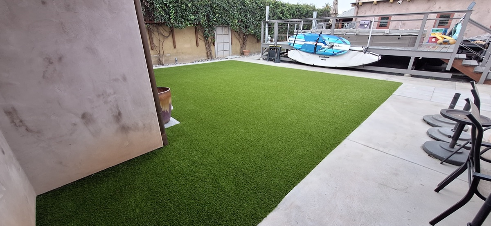

Commercial Artificial Turf Installation
High-traffic, ADA-compliant turf solutions for businesses, HOAs, parks, and commercial properties across North County SD.
High-traffic, ADA-compliant turf solutions for businesses, HOAs, parks, and commercial properties across North County SD.

Commercial properties have different demands than residential yards. Foot traffic is heavier, maintenance budgets are tighter, liability concerns are real, and the turf needs to look sharp every single day. At Tri-City Synthetic Turf, we install commercial-grade artificial turf designed specifically for these conditions. Our commercial installations serve businesses, HOA common areas, apartment complexes, parks, schools, daycare centers, and municipal facilities across North County San Diego.
The turf products we use for commercial applications are built to handle sustained heavy traffic. These are denser, more resilient fibers with higher stitch rates and stronger backing systems than standard residential turf. They resist matting, maintain their appearance under daily use, and hold up to foot traffic volumes that would flatten a residential product within months. We select the right product for your specific application because a school playground has different requirements than an office courtyard.
ADA compliance is a priority for any commercial installation. The turf surfaces we install meet accessibility standards for wheelchair access and mobility devices. We ensure the surface is firm, stable, and slip-resistant while still providing the natural look and feel that makes synthetic turf appealing. The base preparation and turf selection are both critical to achieving ADA compliance, and our 21+ years of commercial installation experience means we know how to get it right.
Water savings are a major driver for commercial turf conversions in Southern California. HOAs and property management companies are eliminating natural grass common areas to cut water bills that can run thousands of dollars per month. The math is straightforward. A commercial turf installation pays for itself in water savings alone within 3 to 5 years, and the turf lasts 15 years or more with basic maintenance.
We understand that commercial projects require coordination. Tenants need to be notified, work areas need to be phased, and timelines need to be realistic. We provide detailed project plans with clear milestones, and we communicate proactively throughout the installation. For multi-phase projects, we can stage the work to keep portions of the property usable while other sections are being installed.
Property managers across Vista, Oceanside, Carlsbad, San Marcos, and Escondido trust us with their commercial turf projects because we deliver professional results on schedule and on budget. We are a D-12 and C-15 licensed contractor and with the experience and crew to handle projects of any scale.
Call (760) 681-3517 to schedule a commercial property assessment and get a detailed proposal.
Dense fibers with high stitch rates and reinforced backing systems that hold up to sustained daily foot traffic without matting.
Firm, stable, slip-resistant surfaces that meet accessibility standards for wheelchair access and mobility devices.
Lush, green, uniform surfaces that look sharp every day of the year. No brown spots, no dead patches, no seasonal decline.
Eliminate mowing crews, irrigation system repairs, fertilizer programs, and water bills. Maintenance drops to occasional brushing and debris removal.
Commercial properties save thousands per month on water. The installation typically pays for itself within 3 to 5 years in water savings alone.
Incorporate logos, colored turf sections, or custom patterns into your installation for a branded outdoor environment.
From assessment to final inspection, here is how we handle commercial projects.
We survey your property, assess traffic patterns, measure all areas, and discuss your goals. You receive a detailed proposal with product specs, timeline, and pricing.
We select the right commercial-grade turf for your application, plan the installation phases, and coordinate scheduling to minimize disruption to your operations.
Our crew executes the installation according to the approved plan. For large properties, we phase work to keep portions of the site accessible throughout the project.
We walk the completed installation with you, verify every detail meets spec, and provide maintenance guidelines. Your property is ready for use immediately.
Commercial turf installations come with manufacturer warranties ranging from 8 to 15 years depending on the product selected. We also provide a workmanship warranty on our installation. Specific warranty terms are outlined in your project proposal.
Yes. We offer ongoing maintenance agreements for commercial clients that include periodic brushing, infill top-ups, debris removal, and inspection. Regular maintenance extends the life of your turf and keeps it looking professional. We tailor maintenance schedules to the traffic level and use of each property.
Timeline depends on project size and complexity. A small commercial space of 1,000 to 3,000 square feet typically takes 3 to 5 days. Larger projects like apartment complexes, parks, or multi-phase HOA installations can take 2 to 4 weeks. We provide a detailed timeline in your proposal and can phase work to minimize disruption to your business or tenants.
We work with commercial clients on payment structures that fit their budget. For larger projects, we can arrange phased billing tied to project milestones. We are happy to discuss payment options during the proposal stage.

Safe, cushioned turf surfaces for playgrounds, daycare centers, and school play areas.

Complete turf solutions for any residential or commercial property in North County.

Full landscape design integrating turf with hardscape, plants, and lighting.